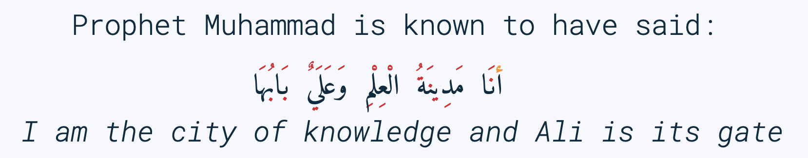

Here are some of my latest thoughts on arabic… such as thread-first and loop (•̀ᴗ•́)و

1. Arabic CheatSheet :arabic:cheat-sheet:
Arabic CheatSheet
{kind=link}

@@ #+latex: \fi
badge:Read|more|green|https://alhassy.com/arabic-cheat-sheet|read-the-docs
2. A Brisk Introduction to the Fundamentals of Arabic Grammar, نحو arabic
A Brisk Introduction to the Fundamentals of Arabic Grammar, نحو
badge:Read|more|green|https://alhassy.com/arabic-word-order|read-the-docs
3. Arabic Roots: The Power of Patterns arabic javascript emacs
Arabic Roots: The Power of Patterns

badge:Read|more|green|https://alhassy.com/arabic-roots|read-the-docs
4. Glossary of Arabic Linguistic Terms arabic
Glossary of Arabic Linguistic Terms
badge:Read|more|green|https://alhassy.com/arabic-glossary|read-the-docs
5. Arabic Cartoons family arabic javascript
Arabic Cartoons

badge:Read|more|green|https://alhassy.com/cartoon|read-the-docs

Life & Computing Science by Musa Al-hassy is licensed under a Creative Commons Attribution-ShareAlike 3.0 Unported License